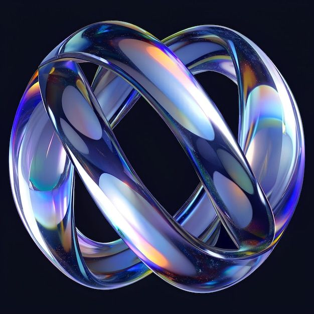
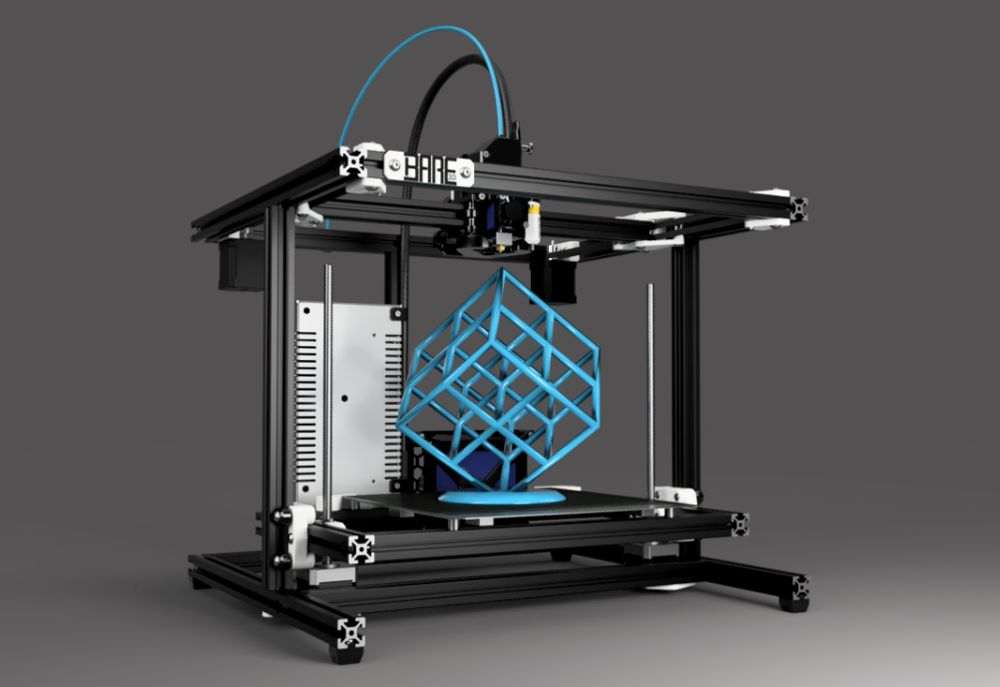
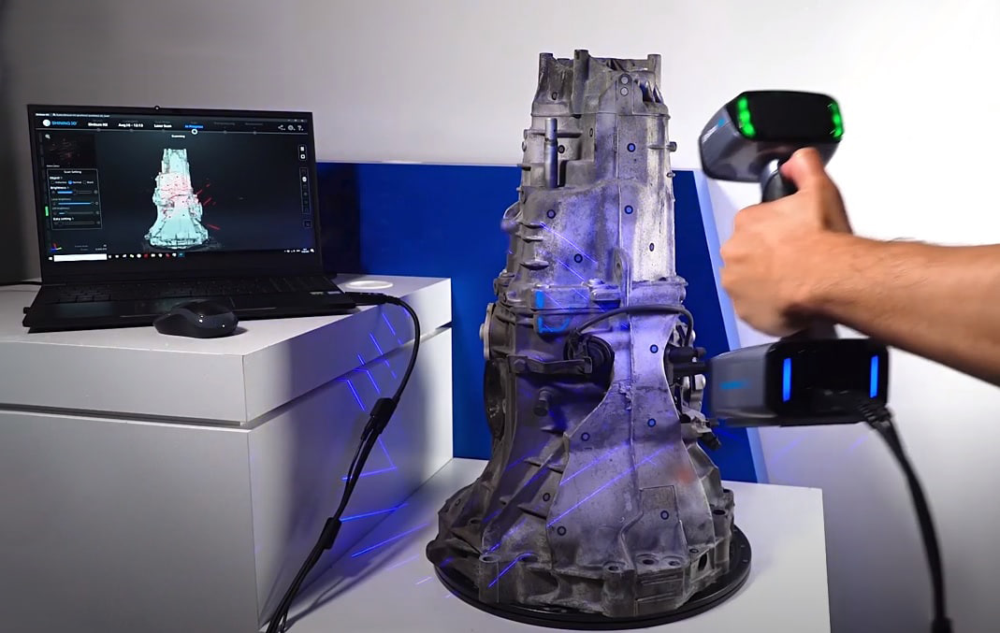
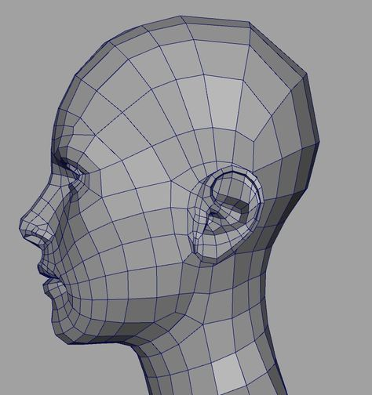
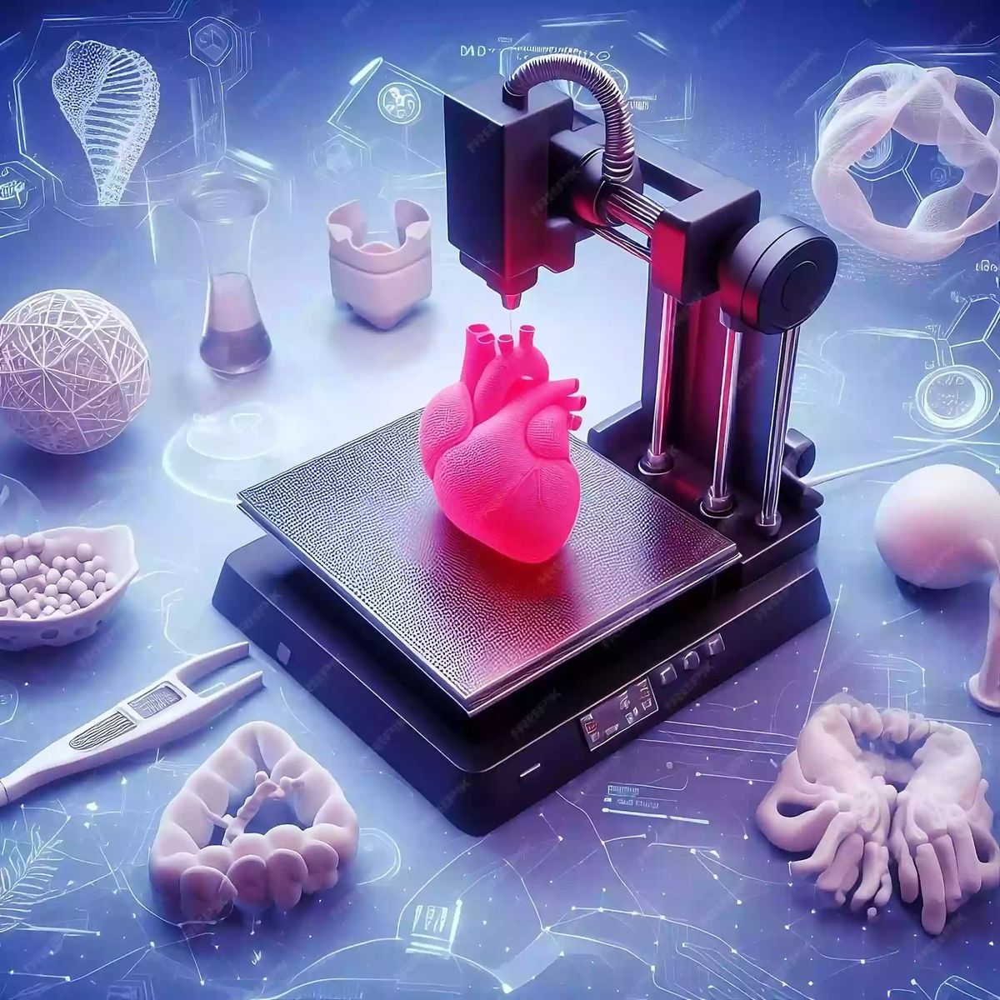
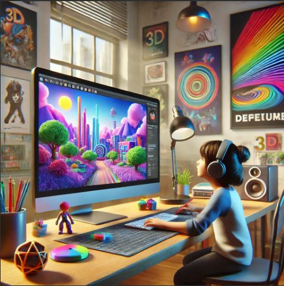
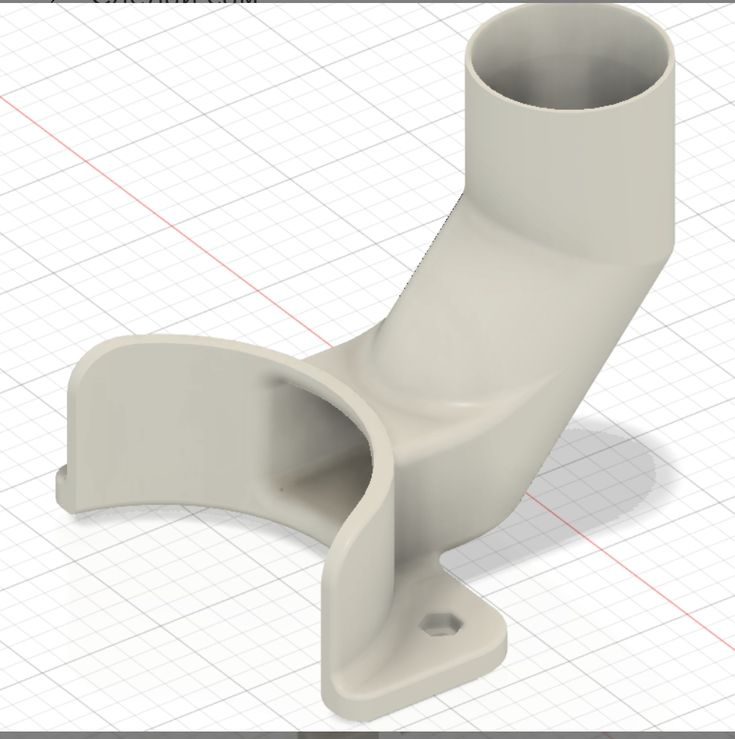

3D друк, моделювання та інновації майбутнього.
3D технології — це сукупність методів і засобів створення, обробки та передачі тривимірної інформації. Вони об’єднують процеси моделювання, друку, сканування та графічної візуалізації, дозволяючи перетворювати цифрові моделі на реальні фізичні об’єкти або віртуальні сцени.
Сьогодні 3D технології застосовуються у промисловості, медицині, архітектурі, робототехніці, кінематографі та освіті. Вони значно прискорюють виробництво, зменшують витрати, розширюють можливості творчості й відкривають шлях до інновацій — від друку протезів і складних механічних деталей до створення реалістичних спецефектів і віртуальних світів.

Створення цифрових об’ємних моделей у спеціалізованих програмах. Використовується у дизайні, архітектурі, ігровій індустрії та кіно.

Технологія адитивного виробництва, що дозволяє перетворювати цифрові моделі у фізичні об’єкти. Застосовується у медицині, промисловості та прототипуванні.

Процес отримання тривимірної форми реального об’єкта за допомогою спеціальних 3D сканерів. Використовується для копіювання, контролю якості та реставрації.

Комп’ютерна візуалізація об’єктів: рендеринг, анімація, спецефекти. Є основою сучасного кінематографу та відеоігор.

Створення протезів, імплантів, моделей органів для планування операцій, біодрук тканин та індивідуальних ортопедичних пристроїв.
Друк макетів, проєктування будівель, створення конструкцій, 3D-друк елементів інтер’єру та навіть будинків.

Створення CGI графіки, 3D персонажів, спецефектів, складних анімаційних сцен та віртуальних декорацій.

Прототипування деталей, виготовлення інструментів, прискорення виробничих процесів та зниження витрат.
Візуалізація навчальних матеріалів, створення моделей, навчання цифровому дизайну та робототехніці.
Друк корпусів роботів, механічних деталей, прототипування рухомих систем та елементів автоматизації.
Підпишіться на нашу розсилку, щоб отримувати останні новини, ексклюзивні матеріали та анонси нових технологій щотижня.